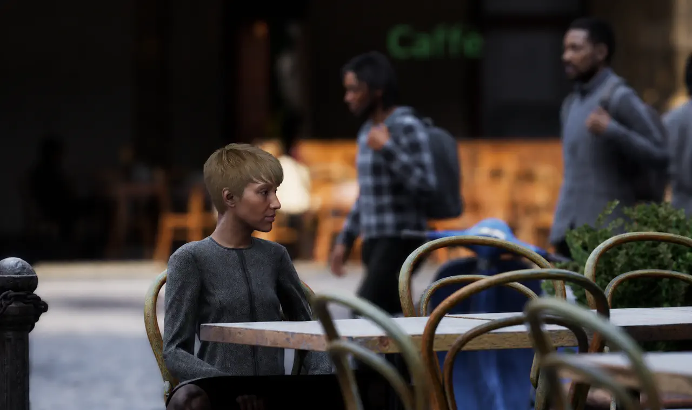
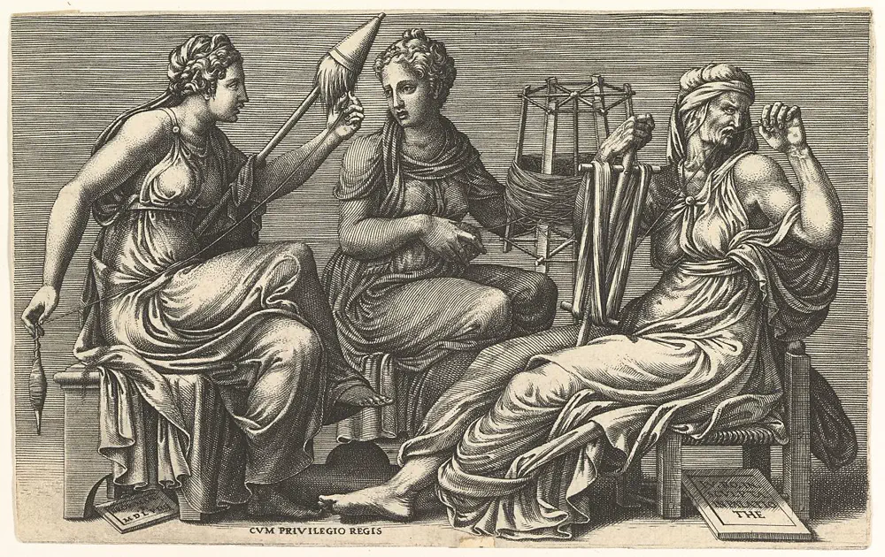

The Core
Imagine entering a place where everything feels real, but you know it’s a design. A Mediterranean town frozen in time, filled with people who go about their lives, unaware that they are part of a simulation. Lelit Distrikt doesn't just tell you this; it lets you live it.
You aren't just playing a game; you are stepping into a social study. You are the observer, the guest, and perhaps the only one who knows the truth about the sky above. The experience asks you to consider what makes a person real when their world is built by architects you've never met.
What to Expect
Forget choosing from a list of pre-written options. In Lelit, you speak or type exactly what you want to say. The people here understand you and respond naturally, guided by their own personalities and whatever is happening in the moment.
Characters don't just forget you when you walk away. They remember what you told them, how you made them feel, and even share gossip with their neighbors. Your reputation grows and shifts based on your actual conversations over time.

The town follows its own rhythm. People go to the market, meet at the café, and return home to sleep, even when you aren't there to watch. The world doesn't pause; it keeps moving, ensuring things have changed every time you return.
You aren't alone. Auggie is your constant companion and the only one who knows the world is a simulation. He’s your guide, your confidant, and someone you can rely on to tell you what's really happening beneath the surface.
Lelit Distrikt is more than just a window on your monitor. Characters like Auggie can reach out to you through phone messages, keeping you connected to the story as you go about your real-world day.
Your conversations and experiences are yours alone. Everything happens right on your computer. Nothing is sent to the internet or stored on a distant server. It’s a private world that stays with you, for you.
The Oversight
Moirai is a name the residents never hear. To them, the world is just the world. To you, Moirai is the organization that built this place, the invisible hand that keeps the simulation running and the "sky" working correctly.
They are the administrators of this experiment. They are clinical, efficient, and always watching. They see the town not as a home, but as a system to be preserved. They provide the directives you follow, but their true motives remain hidden behind formal memos and cold instructions.
Working for Moirai means you are part of the machinery. You are here to observe and interact, but as you grow closer to the people of the district, you might start to wonder if the architects are watching you just as closely as they watch their creation.

"The threads of life are woven long before they are cut."
Outside the Dome
Most games stop the moment you close them. Lelit Distrikt is different. The simulation keeps running, the people keep living, and the town evolves while you’re away. You aren't the center of this world; you are a visitor to a place that has its own life, its own schedule, and its own secrets.
Auggie is your connection to what you missed. Because he’s the only one who knows the truth, he might message you to tell you about a conversation he overheard or a strange event in the square. It’s not a simple notification; it’s a letter from a friend who is still inside the experiment while you are back in your real life.
The Moirai Group, overseeing the experiment, might send you formal notes or memos. Their requests always seem simple, but they remind you that the architects are always keeping track of your progress.
You can message Auggie back whenever you want. Ask him how he's doing, or tell him what to look out for. He responds in real-time, proving that your influence on the district doesn't end just because the game isn't open.
Experience the simulation firsthand through a curated, high-fidelity walkthrough. Ideal for individuals or small groups looking to explore the district's depth.
Lelit Distrikt is designed for controlled environments and art galleries. I provide the infrastructure for public display as an interactive installation.
I am open to partnerships with institutions exploring the intersection of AI, sociology, and digital ethics. Let's push the experiment further.